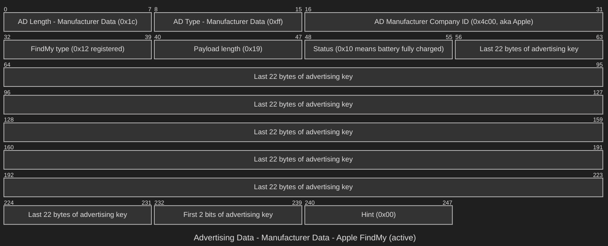

Return To Go Without Wires
FOSDEM 2025
Ron Evans - @deadprogram
fed: @deadprogram@social.tinygo.org
bsky: @deadprogram.com
Ron Evans (@deadprogram)
Technologist For Hire
hybridgroup.com
Software that makes
your hardware work
Open Source Projects
tinygo.org
FOSDEM 2021
Go Without Wires
FOSDEM 2022
Go Further Without Wires
FOSDEM 2023
Go Even Further Without Wires
FOSDEM 2024
Go Without Wires
Strikes Back
FOSDEM 2025
Return To Go Without Wires

Go Bluetooth
how bluetooth works; tldr version

Hello, Advertising
Raspberry Pi Pico-W
Raspberry Pi RP2040 + Infineon CYW43439
ARM Cortex-M0+
133 Mhz
264K RAM
Look at the hardware
Advertising Code
See the code
Advertiser Demo
Scanner
Scanner Code
See the code
Scanner Demo
It Is All About Advertising
Advertising Is all you need
Beacons
Advertising Data
Service Data
Go BTHOME
github.com/hybridgroup/go-bthome
Manufacturer Data
Apple
Closed source tends not to stay that way
Secure Mobile Networking Lab (SEEMOO)
Technical University of Darmstadt
OpenHaystack
How "Find My" works
Public Key Encryption
NIST P-244 curve
28 byte public key

I just wanted to make some trackers
My flight cases
Gophercon Singapore 2025
of course, I ended up making an entire project
Go Haystack
github.com/hybridgroup/go-haystack
Go Haystack Architecture
haystack keys
keys Code
See the code
keys Demo
findmy package
See the code
Firmware
RP2040-W
Tracker Hardware
Firmware Code
See the code
Flash Tracker
haystack scan
scan Code
See the code
scan Demo
TinyScan
Pimoroni Badger2040-W
TinyScan Code
See the code
Flash TinyScan
Look at the hardware
Go Haystack in Hacker News
So I finished the Gopher tags
Look at the hardware
Added tracking to the Gopherbots
Then I flew to Singapore
And it worked

OVD ==[]> MAD -> DOH -> SIN
Then we went around Singapore
And it kept working

Grey Gopherbot in Singapore
And then I flew back
It even worked while in mid-flight